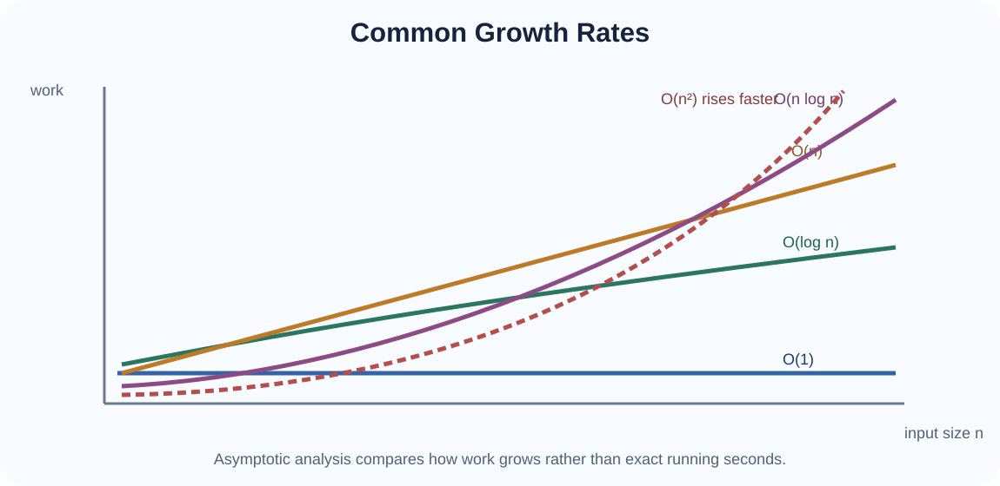
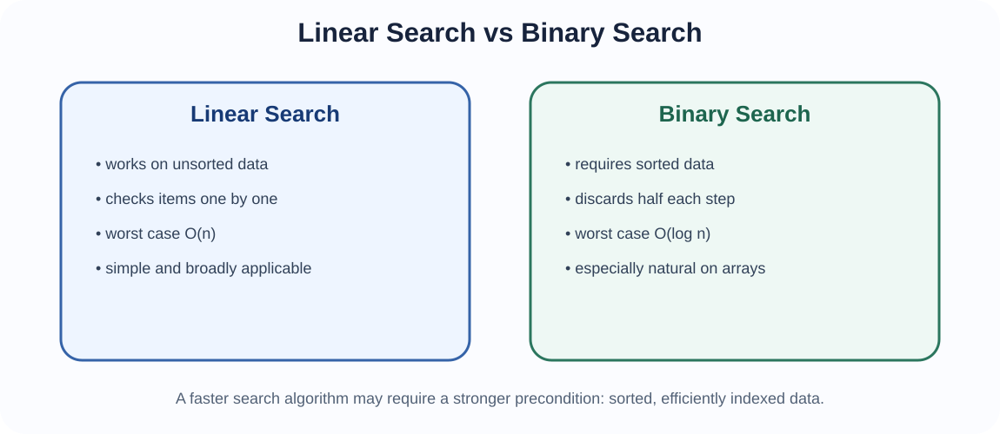
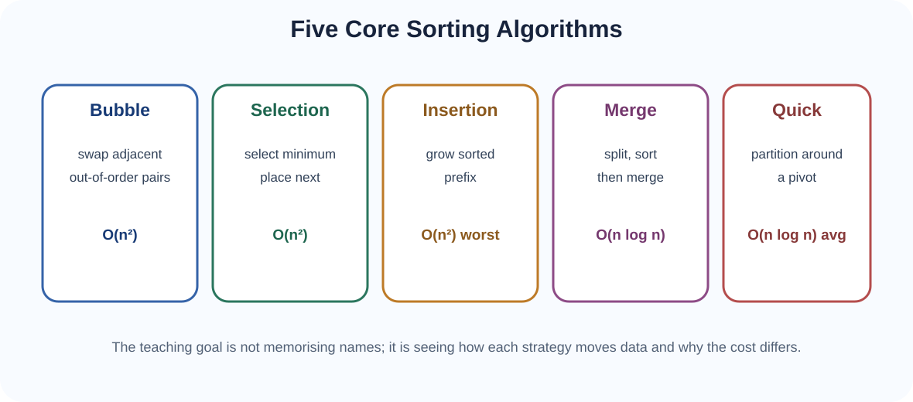
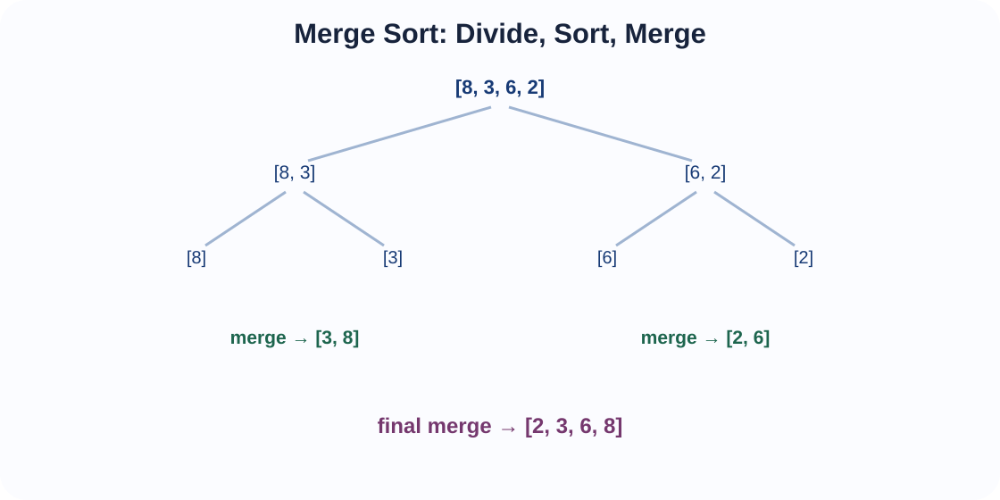
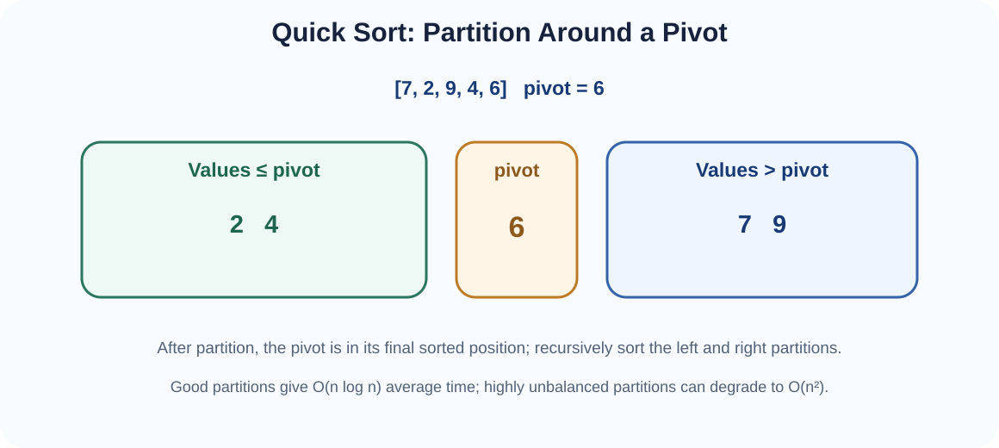

How to compare algorithms by the work they perform, then apply that reasoning to searching and sorting.
For a list of ten values, almost any reasonable search or sorting algorithm feels fast. For one million values, the difference between checking every possible pair and repeatedly halving the problem becomes enormous. Algorithm analysis therefore asks a more useful question than “How many seconds did this run on my laptop?” It asks: How does the amount of work grow as the input size grows?
This gives us a machine-independent way to compare algorithms. Exact runtime still depends on processor speed, language, compiler, memory hierarchy and implementation quality, but growth rate usually determines whether an approach remains practical at larger scale.
We normally represent input size by n. What n means depends on the problem:
We then identify a basic operation whose repetition dominates the running work, for example a comparison, swap, assignment or recursive call.
Time complexity describes how the number of significant operations grows with input size. Space complexity describes how additional memory requirements grow.
An algorithm can trade one for the other. Memoisation, for example, spends more memory to avoid repeated recursive work. Merge sort uses extra temporary storage to achieve reliable O(n log n) sorting time. Algorithm selection therefore considers both time and memory.
Suppose an algorithm performs:
3n + 5basic operations. For large n, the linear term dominates; the constant 5 becomes comparatively unimportant. We therefore describe the growth as linear, written O(n).
If an algorithm performs:
2n² + 8n + 20the quadratic term dominates for large n, so its growth is O(n²).
Three related notations are useful:
In this course we focus mainly on Big-O because it is the most commonly used introductory language for algorithm growth, but students should know that Big-O is not the only asymptotic notation.

| Growth | Name | Typical example | Intuition |
|---|---|---|---|
| O(1) | Constant | Array access by known index | Work does not grow with n |
| O(log n) | Logarithmic | Binary search | Repeatedly discard a fixed fraction |
| O(n) | Linear | Linear search | Visit items one by one |
| O(n log n) | Linearithmic | Merge sort; average quicksort | Logarithmic levels with linear work per level |
| O(n²) | Quadratic | Selection sort; bubble sort worst case | Nested comparisons over many pairs |
| O(2ⁿ) | Exponential | Naive recursive Fibonacci | Branching recursive work grows rapidly |
| O(n!) | Factorial | Enumerating all permutations | Extremely rapid combinatorial growth |
Big-O deliberately ignores constant multipliers and lower-order terms. O(2n) and O(100n + 50) are both O(n). This does not mean constants never matter in real programs. It means asymptotic notation focuses on how the dominant growth changes as n becomes large.
An algorithm may do different work for inputs of the same size.
For linear search, finding the target at the first position is O(1) best case, while finding it at the final position or not finding it at all is O(n) worst case.
Searching asks whether a target value exists in a collection and often where it occurs. The two core algorithms in this topic are linear search and binary search.

Linear search starts at one end and checks each element until the target is found or the collection ends.
ALGORITHM LinearSearch(A, target)
FOR i ← 0 TO length(A) - 1
IF A[i] = target
RETURN i
RETURN NOT_FOUNDBinary search works by comparing the target with the middle item of a sorted collection. Each comparison eliminates roughly half of the remaining search interval.
ALGORITHM BinarySearch(A, target)
low ← 0
high ← length(A) - 1
WHILE low ≤ high
mid ← floor((low + high) / 2)
IF A[mid] = target
RETURN mid
IF target < A[mid]
high ← mid - 1
ELSE
low ← mid + 1
RETURN NOT_FOUNDALGORITHM RecursiveBinarySearch(A, target, low, high)
IF low > high
RETURN NOT_FOUND
mid ← floor((low + high) / 2)
IF A[mid] = target
RETURN mid
IF target < A[mid]
RETURN RecursiveBinarySearch(A, target, low, mid - 1)
RETURN RecursiveBinarySearch(A, target, mid + 1, high)Binary search requires a sorted collection and is especially natural when the structure supports fast indexing, such as an array. On a linked list, repeatedly locating the middle node is not O(1), so the practical advantage is reduced.
| Feature | Linear search | Binary search |
|---|---|---|
| Data must be sorted? | No | Yes |
| Worst-case time | O(n) | O(log n) |
| Good for linked list? | Yes | Usually not ideal |
| Setup cost | None | May require sorting first |
| Repeated searches on sorted array | Usually inferior | Very attractive |
Sorting rearranges items into an order such as ascending or descending. Sorting can make later operations easier: binary search becomes possible, duplicates become visible, rankings can be produced, and data can be grouped for reporting.

Bubble sort repeatedly compares adjacent elements and swaps them when they are in the wrong order. Large values gradually move toward the end.
ALGORITHM BubbleSort(A)
n ← length(A)
FOR pass ← 0 TO n - 2
swapped ← false
FOR j ← 0 TO n - 2 - pass
IF A[j] > A[j + 1]
SWAP A[j], A[j + 1]
swapped ← true
IF swapped = false
BREAK
RETURN ASelection sort divides the array into a sorted prefix and unsorted remainder. On each pass, it finds the minimum remaining value and places it into the next sorted position.
ALGORITHM SelectionSort(A)
n ← length(A)
FOR i ← 0 TO n - 2
minIndex ← i
FOR j ← i + 1 TO n - 1
IF A[j] < A[minIndex]
minIndex ← j
IF minIndex ≠ i
SWAP A[i], A[minIndex]
RETURN AInsertion sort grows a sorted prefix. Each new value is moved left until it reaches the correct position among previously processed values.
ALGORITHM InsertionSort(A)
FOR i ← 1 TO length(A) - 1
key ← A[i]
j ← i - 1
WHILE j ≥ 0 AND A[j] > key
A[j + 1] ← A[j]
j ← j - 1
A[j + 1] ← key
RETURN A
Merge sort uses divide and conquer:
ALGORITHM MergeSort(A, left, right)
IF left ≥ right
RETURN
mid ← floor((left + right) / 2)
MergeSort(A, left, mid)
MergeSort(A, mid + 1, right)
Merge(A, left, mid, right)ALGORITHM Merge(A, left, mid, right)
L ← copy of A[left ... mid]
R ← copy of A[mid + 1 ... right]
i ← 0
j ← 0
k ← left
WHILE i < length(L) AND j < length(R)
IF L[i] ≤ R[j]
A[k] ← L[i]
i ← i + 1
ELSE
A[k] ← R[j]
j ← j + 1
k ← k + 1
WHILE i < length(L)
A[k] ← L[i]
i ← i + 1
k ← k + 1
WHILE j < length(R)
A[k] ← R[j]
j ← j + 1
k ← k + 1Repeated splitting creates approximately log₂n levels. At each level, all n elements participate in merging work. Therefore:

Quick sort also uses divide and conquer, but instead of merging sorted halves it first partitions the data around a pivot. Values are rearranged so that smaller/equal values lie on one side and larger values on the other. The pivot reaches its final sorted position after partitioning.
ALGORITHM QuickSort(A, low, high)
IF low < high
p ← Partition(A, low, high)
QuickSort(A, low, p - 1)
QuickSort(A, p + 1, high)ALGORITHM Partition(A, low, high)
pivot ← A[high]
i ← low - 1
FOR j ← low TO high - 1
IF A[j] ≤ pivot
i ← i + 1
SWAP A[i], A[j]
SWAP A[i + 1], A[high]
RETURN i + 1If the pivot repeatedly produces one very large partition and one tiny partition, recursion has about n levels instead of log n. Each level may still perform substantial partition work. Good pivot strategies and randomisation reduce the chance of consistently poor partitions.
| Algorithm | Best | Average | Worst | Extra space | Stable? |
|---|---|---|---|---|---|
| Bubble | O(n)* | O(n²) | O(n²) | O(1) | Yes |
| Selection | O(n²) | O(n²) | O(n²) | O(1) | No, standard form |
| Insertion | O(n) | O(n²) | O(n²) | O(1) | Yes |
| Merge | O(n log n) | O(n log n) | O(n log n) | O(n) | Yes |
| Quick | O(n log n) | O(n log n) | O(n²) | O(log n) avg stack | No, standard form |
*Bubble sort reaches O(n) best case only when implemented with an early-exit flag.
Selection sort performs roughly:
regardless of whether the array is already nearly sorted. Quicksort instead tries to create balanced partitions. When that works well, the problem depth is logarithmic. This is why an animation is especially useful: selection sort repeatedly scans the unsorted region, while quicksort reorganises the search space through partitions.
Suppose student records are already ordered by registration number and we then sort them by grade. A stable sort preserves the existing registration-number order among students who have the same grade. Stability therefore matters when records have multiple sort keys.
An in-place algorithm uses little extra memory. Selection, insertion and bubble sort are normally in-place. Standard merge sort on arrays requires temporary arrays, while quicksort usually rearranges data within the original array but uses recursion-stack space.
Optimisation begins with the algorithmic idea, not micro-level syntax.
Topic 7 introduces trees, heaps and hash tables. These structures exist largely because they can support important operations more efficiently than simple linear structures. The Big-O reasoning developed here will allow us to compare BST search, heap operations and hash-table lookup meaningfully.